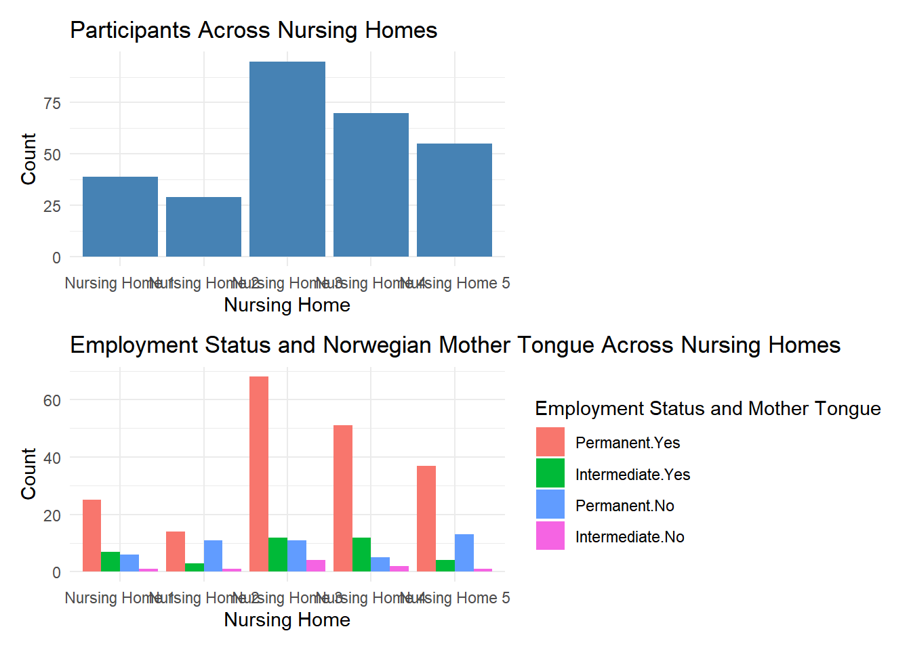
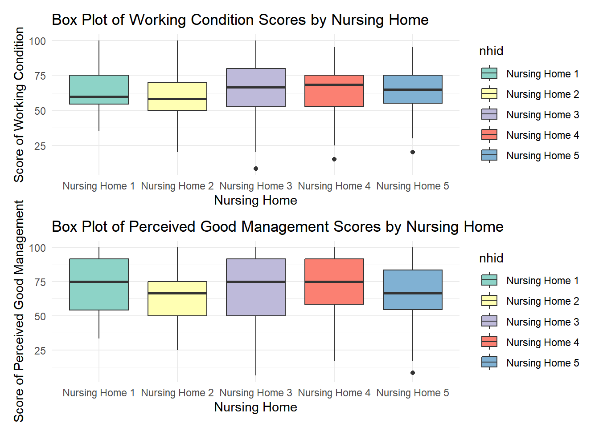
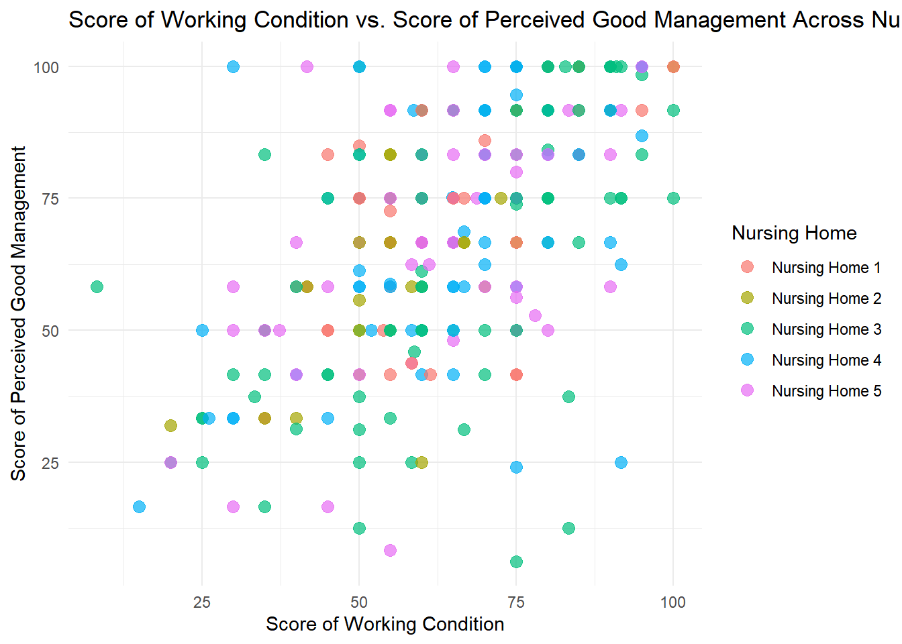
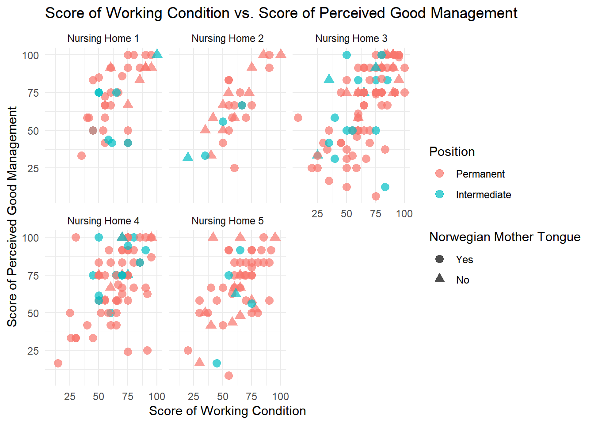

The purpose of this assignment is to provide data visualization analysis of the working conditions and perceived management quality within five nursing homes in Norway. This analysis aims to offer insights into the current state of the workforce, highlight areas of strength, and identify opportunities for improvement.
Overview of the Dataset
The dataset comprises information from 288 participants distributed across five nursing homes in Norway. This hierarchical dataset includes two levels of sampling: individual staff members (Level 1) and the nursing homes they belong to (Level 2). The variables in this dataset are as follows:
Nursing Home ID (nhid): Identifies the nursing home to which each staff member belongs (Nursing Home 1 to Nursing Home 5).
Position (status): Indicates whether a staff member holds a permanent or intermediate position.
Norwegian Mother Tongue (mother): Specifies whether a staff member’s mother tongue is Norwegian (Yes or No).
Score of Working Condition (scorewc): Reflects staff members’ perceptions of their working conditions, with higher scores indicating more favorable conditions.
Score of Perceived Good Management (scorepom): Reflects staff members’ perceptions of management quality, with higher scores indicating more favorable perceptions.
Libraries
library(haven)library(tidyverse)
── Attaching core tidyverse packages ──────────────────────── tidyverse 2.0.0 ──
✔ dplyr 1.1.4 ✔ readr 2.1.5
✔ forcats 1.0.0 ✔ stringr 1.5.1
✔ ggplot2 3.5.1 ✔ tibble 3.2.1
✔ lubridate 1.9.3 ✔ tidyr 1.3.1
✔ purrr 1.0.2
── Conflicts ────────────────────────────────────────── tidyverse_conflicts() ──
✖ dplyr::filter() masks stats::filter()
✖ dplyr::lag() masks stats::lag()
ℹ Use the conflicted package (<http://conflicted.r-lib.org/>) to force all conflicts to become errors
nhid job age gender
Length:288 Min. : 2.000 Min. :1.000 Min. :1
Class :character 1st Qu.: 2.000 1st Qu.:1.000 1st Qu.:2
Mode :character Median : 3.000 Median :1.000 Median :3
Mean : 3.217 Mean :1.062 Mean :3
3rd Qu.: 3.000 3rd Qu.:1.000 3rd Qu.:4
Max. :10.000 Max. :2.000 Max. :5
NA's :25 NA's :31 NA's :24
workexperience worknh shift change status
Min. :1.000 Min. :1.00 Min. :1.000 Min. :2.000 Min. :1.000
1st Qu.:2.000 1st Qu.:2.00 1st Qu.:4.000 1st Qu.:3.000 1st Qu.:1.000
Median :3.500 Median :3.00 Median :4.000 Median :4.000 Median :1.000
Mean :3.338 Mean :2.84 Mean :3.857 Mean :4.019 Mean :1.163
3rd Qu.:4.000 3rd Qu.:4.00 3rd Qu.:5.000 3rd Qu.:5.000 3rd Qu.:1.000
Max. :6.000 Max. :6.00 Max. :6.000 Max. :5.000 Max. :2.000
NA's :22 NA's :20 NA's :44 NA's :31
mothert scorewc scorepom
Min. :1.000 Min. : 8.333 Min. : 6.25
1st Qu.:1.000 1st Qu.: 51.455 1st Qu.: 50.00
Median :1.000 Median : 65.000 Median : 75.00
Mean :1.191 Mean : 64.579 Mean : 68.67
3rd Qu.:1.000 3rd Qu.: 75.007 3rd Qu.: 91.67
Max. :2.000 Max. :100.000 Max. :100.00
nhid job age gender workexperience
1:39 Min. : 2.000 Min. :1.000 Min. :1 Min. :1.000
2:29 1st Qu.: 2.000 1st Qu.:1.000 1st Qu.:2 1st Qu.:2.000
3:95 Median : 3.000 Median :1.000 Median :3 Median :3.500
4:70 Mean : 3.217 Mean :1.062 Mean :3 Mean :3.338
5:55 3rd Qu.: 3.000 3rd Qu.:1.000 3rd Qu.:4 3rd Qu.:4.000
Max. :10.000 Max. :2.000 Max. :5 Max. :6.000
NA's :25 NA's :31 NA's :24 NA's :22
worknh shift change status mothert
Min. :1.00 Min. :1.000 Min. :2.000 Min. :1.000 Min. :1.000
1st Qu.:2.00 1st Qu.:4.000 1st Qu.:3.000 1st Qu.:1.000 1st Qu.:1.000
Median :3.00 Median :4.000 Median :4.000 Median :1.000 Median :1.000
Mean :2.84 Mean :3.857 Mean :4.019 Mean :1.163 Mean :1.191
3rd Qu.:4.00 3rd Qu.:5.000 3rd Qu.:5.000 3rd Qu.:1.000 3rd Qu.:1.000
Max. :6.00 Max. :6.000 Max. :5.000 Max. :2.000 Max. :2.000
NA's :20 NA's :44 NA's :31
scorewc scorepom
Min. : 8.333 Min. : 6.25
1st Qu.: 51.455 1st Qu.: 50.00
Median : 65.000 Median : 75.00
Mean : 64.579 Mean : 68.67
3rd Qu.: 75.007 3rd Qu.: 91.67
Max. :100.000 Max. :100.00
Convert Numerical Variables Into Categorical Variables
# Convert nhid to categorical variablenursing_homes$nhid <-factor(nursing_homes$nhid, levels =c(1, 2, 3, 4, 5), labels =c("Nursing Home 1", "Nursing Home 2", "Nursing Home 3", "Nursing Home 4", "Nursing Home 5"))# Convert status to categorical variablenursing_homes$status <-factor(nursing_homes$status, levels =c(1, 2), labels =c("Permanent", "Intermediate"))# Convert mother to categorical variablenursing_homes$mothert <-factor(nursing_homes$mothert, levels =c(1, 2), labels =c("Yes", "No"))# View updated datasetsummary(nursing_homes)
nhid job age gender
Nursing Home 1:39 Min. : 2.000 Min. :1.000 Min. :1
Nursing Home 2:29 1st Qu.: 2.000 1st Qu.:1.000 1st Qu.:2
Nursing Home 3:95 Median : 3.000 Median :1.000 Median :3
Nursing Home 4:70 Mean : 3.217 Mean :1.062 Mean :3
Nursing Home 5:55 3rd Qu.: 3.000 3rd Qu.:1.000 3rd Qu.:4
Max. :10.000 Max. :2.000 Max. :5
NA's :25 NA's :31 NA's :24
workexperience worknh shift change
Min. :1.000 Min. :1.00 Min. :1.000 Min. :2.000
1st Qu.:2.000 1st Qu.:2.00 1st Qu.:4.000 1st Qu.:3.000
Median :3.500 Median :3.00 Median :4.000 Median :4.000
Mean :3.338 Mean :2.84 Mean :3.857 Mean :4.019
3rd Qu.:4.000 3rd Qu.:4.00 3rd Qu.:5.000 3rd Qu.:5.000
Max. :6.000 Max. :6.00 Max. :6.000 Max. :5.000
NA's :22 NA's :20 NA's :44 NA's :31
status mothert scorewc scorepom
Permanent :241 Yes:233 Min. : 8.333 Min. : 6.25
Intermediate: 47 No : 55 1st Qu.: 51.455 1st Qu.: 50.00
Median : 65.000 Median : 75.00
Mean : 64.579 Mean : 68.67
3rd Qu.: 75.007 3rd Qu.: 91.67
Max. :100.000 Max. :100.00
nhid status mothert scorewc
Nursing Home 1:39 Permanent :241 Yes:233 Min. : 8.333
Nursing Home 2:29 Intermediate: 47 No : 55 1st Qu.: 51.455
Nursing Home 3:95 Median : 65.000
Nursing Home 4:70 Mean : 64.579
Nursing Home 5:55 3rd Qu.: 75.007
Max. :100.000
scorepom
Min. : 6.25
1st Qu.: 50.00
Median : 75.00
Mean : 68.67
3rd Qu.: 91.67
Max. :100.00
Descriptive Table
# Create the descriptive tabletable_summary <- nh_data %>%tbl_summary(by = nhid,statistic =list(all_continuous() ~"{mean} ({sd})",all_categorical() ~"{n} ({p}%)" ), ) %>%add_overall() %>%modify_header(label ~"**Variable**") %>%modify_spanning_header(all_stat_cols() ~"**Summary Statistics**" ) %>%modify_caption("**Descriptive Statistics of Nursing Homes Dataset**")# Print the tabletable_summary
Descriptive Statistics of Nursing Homes Dataset
Variable
Summary Statistics
Overall, N = 2881
Nursing Home 1, N = 391
Nursing Home 2, N = 291
Nursing Home 3, N = 951
Nursing Home 4, N = 701
Nursing Home 5, N = 551
status
Permanent
241 (84%)
31 (79%)
25 (86%)
79 (83%)
56 (80%)
50 (91%)
Intermediate
47 (16%)
8 (21%)
4 (14%)
16 (17%)
14 (20%)
5 (9.1%)
mothert
233 (81%)
32 (82%)
17 (59%)
80 (84%)
63 (90%)
41 (75%)
scorewc
65 (19)
65 (17)
60 (18)
66 (20)
65 (18)
63 (17)
scorepom
69 (23)
72 (20)
65 (21)
67 (26)
71 (22)
68 (22)
1 n (%); Mean (SD)
Comment:
The table provides a summary of the distribution of position, Norwegian mother tongue, score of working condition, and score of perceived good management across 5 nursing homes which includes 288 participants. The majority of staffs across all nursing homes hold permanent positions (84%) and have Norwegian as their mother tongue (81%). Nursing Home 5 has the highest proportion of permanent staff (91%), while Nursing Home 2 has the lowest proportion of Norwegian-speaking staff (59%). The mean scores for working conditions and perceived good management are ranging from 60 to 66 and 65 to 72 respectively, across the nursing homes. The table shows that the nursing homes have a predominantly permanent and Norwegian-speaking workforce.
Data Visualization Methods
Bar Plot
The bar plot is used to visualize the distribution of staff employment status and their Norwegian mother tongue status across the five nursing homes. This visualization helps identify the composition of the workforce in terms of permanent and intermediate employment status, as well as the prevalence of staff who speak Norwegian as their mother tongue.
The ggplot2 package was used to construct the bar plot, employing the ggplot() function to specify the dataset and aesthetic mappings. The aes() function mapped the nhid variable to the x-axis and the interaction between status and mothert to the fill aesthetic. To create side-by-side bars for each category combination of status and mothert, the geom_bar() function was utilized with the position = "dodge" argument. For clarity, the plot was customized with titles and labels using the labs() function to add a title and labels for the x-axis, y-axis, and fill legend. The theme_minimal() function was applied to give the plot a clean and simple appearance, while the scale_fill_manual() function was used to manually set the colors for the different fill categories, ensuring the plot is visually appealing and easy to interpret.
Figure 1
# Grouped bar plot for Position (status) and Norwegian Mother Tongue (mothert)grouped_bar_plot <-ggplot(nh_data, aes(x = nhid, fill =interaction(status, mothert))) +geom_bar(position ="dodge") +labs(title ="Employment Status and Norwegian Mother Tongue Across Nursing Homes",x ="Nursing Home",y ="Count",fill ="Employment Status and Mother Tongue") +theme_minimal() +scale_fill_manual(values =c("#F8766D", "#00BA38", "#619CFF", "#F564E3"))# Bar plot for nursing home countsnursing_home_counts <-ggplot(nh_data, aes(x = nhid)) +geom_bar(fill ="steelblue") +labs(title ="Participants Across Nursing Homes",x ="Nursing Home",y ="Count") +theme_minimal()# Combine the plots using patchworkcombined_plot1 <- nursing_home_counts / grouped_bar_plot# Display the combined plotprint(combined_plot1)

Comment:
Figure 1 contains two bar plots stacked vertically. The top bar plot shows the total number of staff members (participants) in each nursing home. The bottom bar plot illustrates the distribution of staff employment status and their Norwegian mother tongue status across different nursing homes.
Nursing Home 3 has the highest count of staff members, followed by Nursing Home 4. Nursing Home 1 and Nursing Home 5 have moderate counts, while Nursing Home 2 has the lowest count. There is a predominant presence of permanent staff with Norwegian as their mother tongue across all nursing homes. Nursing Home 3 has the highest count of permanent staff with Norwegian as their mother tongue. Intermediate staff without Norwegian as their mother tongue are relatively fewer in all nursing homes. The distribution in the graph shows that most staff members in these nursing homes are permanent and Norwegian-speaking, indicating a stable and linguistically homogenous workforce.
Box Plot
The first box plot visualizes the distribution of the scores of working conditions across the five nursing homes. This plot aims to compare the central tendency and variability of working condition scores among the different nursing homes. The second box plot visualizes the distribution of the scores of perceived good management across the five nursing homes. This plot is designed to compare the central tendency and variability of management quality perceptions among different nursing homes.
The ggplot2 package was used to construct both box plots, with the ggplot() function employed to specify the dataset and aesthetic mappings. For the first box plot, the aes() function mapped nhid to the x-axis and scorewc to the y-axis, while for the second box plot, nhid was mapped to the x-axis and scorepom to the y-axis. The geom_boxplot() function was utilized to create the plots, displaying the distribution of working condition scores and management quality scores within each nursing home, respectively. Titles and labels were added using the labs() function to provide clear titles and axis labels, and the theme_minimal() function was applied to ensure a clean and professional appearance. Additionally, the scale_fill_brewer() function was used to apply a specific color palette to the boxes, enhancing visual differentiation between the nursing homes.
Figure 2
# Create box plot for Score of Working Conditionbox_plot_wc <-ggplot(nh_data, aes(x = nhid, y = scorewc, fill = nhid)) +geom_boxplot() +labs(title ="Box Plot of Working Condition Scores by Nursing Home",x ="Nursing Home",y ="Score of Working Condition") +theme_minimal() +scale_fill_brewer(palette ="Set3")# Create box plot for Score of Perceived Good Managementbox_plot_pom <-ggplot(nh_data, aes(x = nhid, y = scorepom, fill = nhid)) +geom_boxplot() +labs(title ="Box Plot of Perceived Good Management Scores by Nursing Home",x ="Nursing Home",y ="Score of Perceived Good Management") +theme_minimal() +scale_fill_brewer(palette ="Set3")# Combine both plots using patchworkcombined_plot2 <- box_plot_wc / box_plot_pom# Display the combined plotprint(combined_plot2)

Comment:
Figure 2 contains two box plots stacked vertically, each illustrating the distribution of scores across five nursing homes. The top box plot shows the distribution of the score of working conditions for each nursing home. The bottom box plot shows the distribution of the score of perceived good management for each nursing home.
The median scores of working conditions center around 65 to 70 across nursing homes. Nursing Home 1 and Nursing Home 2 have lower median scores, suggesting that staff in these nursing homes perceive their working conditions to be less favorable compared to the other three nursing homes. Nursing Home 3 shows a broader spread of variability in scores. Outliers are present in Nursing Home 3, 4, and 5, indicating that there are individual staff members with different perceptions of working conditions compared to the majority.
The median scores of perceived good management center around 70 to 75 across nursing homes. Nursing Home 2 and Nursing Home 5 have lower median scores, suggesting that staff in these nursing homes perceive management quality to be less favorable compared to the other three nursing homes. Outliers are present only in Nursing Home 5, indicating that most staff members’ perceptions of management quality are relatively consistent. While most nursing homes have similar median scores for perceived good management, Nursing Home 2 and Nursing Home 5 differ with lower median scores. This suggests potential areas for improvement in management practices in Nursing Home 2 and Nursing Home 5.
Scatter Plot
The scatter plot aims to explore the relationship between the scores of working condition and perceived good management across the five nursing homes. This visualization helps identify correlations between these two variables and examines how this relationship varies by nursing home, staff position, and language status.
The ggplot2 package was used to construct the scatter plot. The ggplot() function was employed to specify the dataset and aesthetic mappings, with the aes() function mapping scorewc to the x-axis and scorepom to the y-axis, while status was mapped to the color aesthetic and mothert to the shape aesthetic. The geom_point() function was utilized to create the scatter plot, displaying individual data points representing staff members. Titles and labels were added using the labs() function to provide a clear title and axis labels. The theme_minimal() function was applied to ensure a clean and professional appearance, and the facet_wrap() function was used to create separate panels for each nursing home, allowing for a comparative view across all five nursing homes.
Figure 3
# Colored scatter plot for Score of Working Condition vs. Score of Perceived Good Managementcolored_scatter_plot <-ggplot(nh_data, aes(x = scorewc, y = scorepom, color = nhid)) +geom_point(size =3, alpha =0.7) +labs(title ="Score of Working Condition vs. Score of Perceived Good Management Across Nursing Homes",x ="Score of Working Condition",y ="Score of Perceived Good Management",color ="Nursing Home") +theme_minimal()# Display the scatter plotprint(colored_scatter_plot)

Comment:
Figure 3 visualizes the relationship between the score of working conditions and the score of perceived good management across nursing homes, with each point representing an individual staff member’s scores.
There is a general trend indicating a positive correlation between the scores of working conditions and perceived good management. Staff members who rate their working conditions highly also tend to rate management quality highly, and vice versa. The scores for both working conditions and perceived good management span almost the entire range from 0 to 100, suggesting a wide variety of perceptions among staff members across all nursing homes. The overall positive correlation suggests that improving working conditions could lead to better perceptions of management quality and vice versa. A few outliers are observed where scores are particularly high in the top-left and bottom-right corners. These outliers represent staff with significantly different perceptions compared to their peers
Figure 4
scatter_plot <-ggplot(nh_data, aes(x = scorewc, y = scorepom, color = status, shape = mothert)) +geom_point(size =3, alpha =0.7) +facet_wrap(~ nhid) +labs(title ="Score of Working Condition vs. Score of Perceived Good Management",x ="Score of Working Condition",y ="Score of Perceived Good Management",color ="Position",shape ="Norwegian Mother Tongue") +theme_minimal()# Display the scatter plotprint(scatter_plot)

Comment:
Figure 4 visualizes the relationship between the score of working conditions and the score of perceived good management across five different nursing homes. The scatter plot is faceted by nursing home, with each subplot representing one of the five nursing homes.
Higher scores in working conditions correlate with higher perceived management scores. Nursing Home 3 displays a diverse range of scores, indicating varied staff perceptions. Most staff members are in permanent positions in all nursing homes. Staff with Norwegian as their mother tongue are predominant across all nursing homes. There is consistency in high scores for both working conditions and management perceptions in Nursing Home 2, while other nursing homes show broader variability. These graphs suggest that while there is a general positive correlation between good working conditions and management perceptions, the extent of this correlation and the homogeneity of staff characteristics vary across different nursing homes.
Result Interpretation
The majority of staff across all nursing homes are in permanent positions, with most of them having Norwegian as their mother tongue. Nursing Home 3 and Nursing Home 5 have a more diverse staff composition in terms of language.
Most nursing homes have median scores around 65-75, indicating generally favorable working conditions. Nursing Home 2 stands out with a lower median score of working condition, suggesting room for improvement in working conditions. Nursing Home 3 showing a broader spread of variability in working condition scores, indicating diverse perceptions among staff.
The median scores for perceived good management show generally high median scores, around 70-75, across most nursing homes. However, Nursing Home 2 has a lower median score of perceived good management, suggesting that staff perceive management quality to be less favorable. Nursing Home 3 displaying more variability of perceived good management scores, indicating mixed perceptions.
There is a positive correlation between working condition scores and perceived good management scores across all nursing homes.
Recommendations
Given the lower median scores for both working conditions and perceived good management, a focused effort should be made to understand and address the specific challenges faced by staff in Nursing Home 2. This could involve implementing targeted interventions to improve working conditions and management practices.
The presence of intermediate staff with lower scores, especially in Nursing Home 2, indicates a need for better support and integration for these positions. Providing additional training could enhance their experience and performance.
Report Prepared By
Muhammad Saufi bin Abdullah 22307048
Hazlienor Binti Mohd Hatta 22307055
Amalina Binti Asmail @ Ismail 22307044
Mohamad Afiq Amsyar Bin Hamedin 23100003
Tiong Wen Ning 22307078
Appendix
R code used for data preparation, analysis, and visualization in this report has been published on Posit Connect. Additionally, the complete code and dataset are available on GitHub for reference and reproducibility. For access to the code and dataset, please visit: